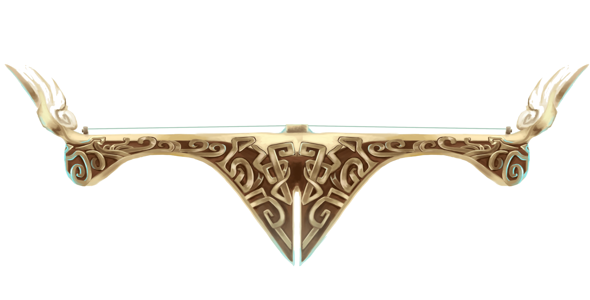

Sona is Demacia's foremost virtuoso of the stringed etwahl, speaking only through her graceful chords and vibrant arias. This genteel manner has endeared her to the highborn, though others suspect her spellbinding melodies to actually emanate magic—a Demacian taboo. Silent to outsiders but somehow understood by close companions, Sona plucks her harmonies not only to soothe injured allies, but also to strike down unsuspecting enemies.

Early life
She was born and spent her early years in Ionia before moving to Demacia and being adopted when Noxus started its invasion on Ionia, around 985 AN.
As a young girl, Sona was considered shy and quiet, until it became apparent that she couldn’t speak at all. But she was unusually thoughtful and attentive, and the other children tended to seek her out whenever they needed comfort, their playful smiles quickly restored.
Sona taught herself how to play it, and her simple, beautiful melodies moved even the most skeptical listener to tears of joy.
Dark Demacian times
However, dark times were approaching. The foreign empire of Noxus had begun landing troops in the northern provinces, and the monks decided to evacuate their young charges to safety before the invasion reached Galrin. After their caretakers struck a deal with a Demacian trader, Sona and a handful of her friends found themselves bundled onto one of the last ships to escape before the Noxian blockade of Ionia’s western coast. She looked back in anguish, knowing that she would not be able to return for many years, if at all.
Adoption
So it was that Sona was taken in by the Buvelle family. Lord Barrett and his wife, Lestara, were prominent supporters of the Illuminator order, and renowned patrons of the arts in the Great City. Sona became like a sister to their daughter, Kahina, and Lestara in particular grew very attached to her. The Demacian language was often difficult to learn, but the Buvelles developed a personalized sign language that enabled Sona to communicate easily with her new family, and their friends.
Current state
As a child of two wildly different cultures, Sona increasingly finds herself at odds with her family’s political allegiances. With etwahl in hand, her melodies now serve not only to provide comfort, but also to defend what she knows is right and just.